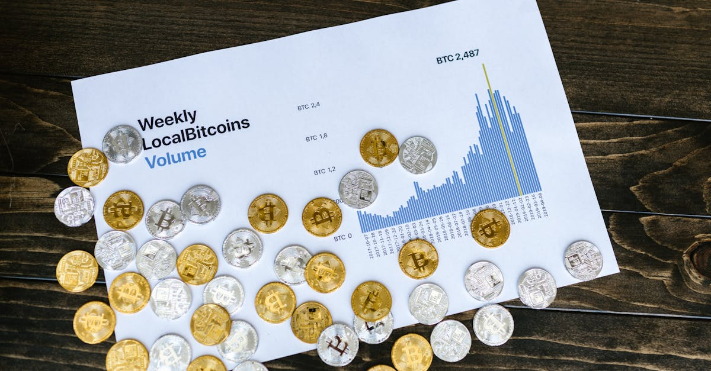
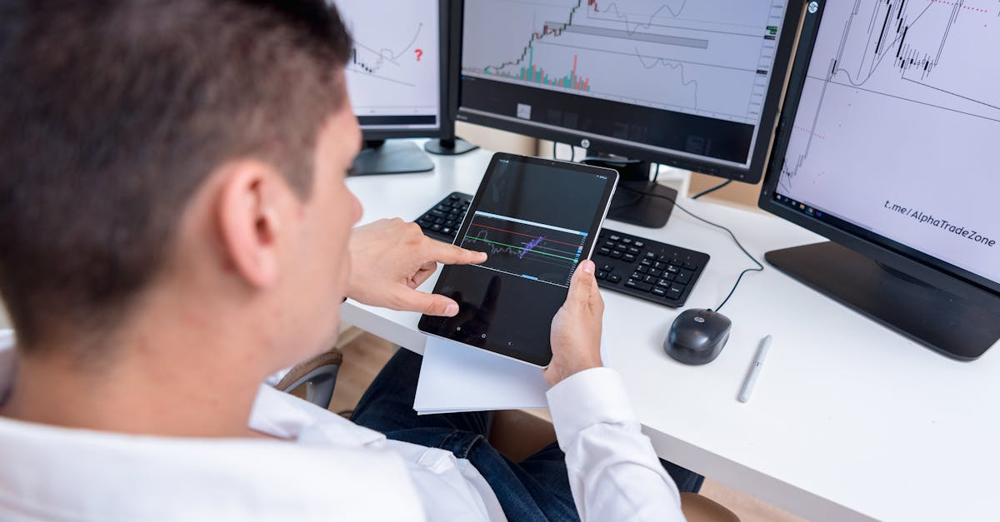

La Barrière des 75 000 $ : Un Plafond Éphémère ou une Résistance Tenace pour le Bitcoin ?
Le marché des cryptomonnaies est, par essence, un écosystème dynamique et souvent imprévisible. Au cœur de cette effervescence, le Bitcoin, locomotive incontestée, se trouve une fois de plus à un carrefour critique. Après une période d'ascension remarquable qui a captivé l'attention des investisseurs institutionnels comme des particuliers, la reine des cryptos peine à franchir et à maintenir le cap au-dessus du seuil psychologique et technique des 75 000 dollars. Cette résistance se profile non seulement comme un jalon symbolique mais aussi comme un plafond persistant, testant la résilience du marché et la patience des traders.
Ce recul n'est pas un événement isolé. Il s'inscrit dans un contexte où les actifs numériques majeurs, y compris Ethereum et Solana, connaissent également des pressions à la baisse, amplifiant le sentiment d'incertitude généralisé. L'incapacité du Bitcoin à consolider au-delà de cette marque cruciale soulève des questions fondamentales sur la dynamique actuelle du marché. Est-ce une pause salutaire avant une nouvelle impulsion haussière, ou le signe d'une fatigue plus profonde, annonciatrice d'une correction plus significative ? L'analyse de cette situation exige une approche multidimensionnelle, intégrant les données techniques, les fondamentaux macroéconomiques et les flux de capitaux.
Pour les acteurs du marché, qu'ils soient des investisseurs aguerris ou des systèmes de trading automatisés, comprendre les forces en jeu est primordial. La volatilité inhérente aux cryptomonnaies, exacerbée par de tels points de résistance, rend la prise de décision complexe. C'est précisément dans ces moments d'incertitude que l'avantage concurrentiel se dessine pour ceux qui peuvent s'appuyer sur une analyse de données exhaustive et une exécution stratégique sans faille. L'échec répété à dépasser les 75 000 $ pour le Bitcoin, et la réaction en chaîne sur les altcoins, illustrent parfaitement la nécessité d'une vigilance constante et d'une capacité d'adaptation rapide.
Dans les sections suivantes, nous explorerons les facteurs sous-jacents à cette résistance, l'impact sur les autres cryptomonnaies et, surtout, comment les technologies de pointe, notamment l'intelligence artificielle, peuvent offrir une perspective et des outils inédits pour naviguer ces eaux tumultueuses, transformant les défis en opportunités pour le trading crypto.

Analyse Technique et Fondamentale : Décrypter la Résistance des 75 000 $
Le seuil des 75 000 dollars pour le Bitcoin n'est pas une simple valeur numérique ; il représente une confluence de facteurs techniques et psychologiques qui en font une zone de résistance particulièrement robuste. Sur le plan de l'analyse technique, ce niveau a été testé à plusieurs reprises, chaque échec à le franchir renforçant sa perception comme un plafond. Les traders institutionnels et les algorithmes de trading surveillent ces points clés avec une attention particulière. On observe souvent des ordres de vente massifs regroupés autour de ces niveaux, créant une pression vendeuse suffisante pour repousser le prix. Les indicateurs de volume, les moyennes mobiles et les retracements de Fibonacci sur les cycles précédents peuvent également confirmer la force de cette zone, suggérant une redistribution des capitaux à l'approche de ce sommet.
Au-delà des graphiques, l'analyse fondamentale offre un éclairage complémentaire sur cette stagnation. Plusieurs éléments macroéconomiques et spécifiques à l'écosystème crypto peuvent expliquer la prudence des investisseurs. Les données sur l'inflation aux États-Unis, les décisions de la Réserve Fédérale concernant les taux d'intérêt, et la perception globale du risque dans les marchés financiers traditionnels exercent une influence directe sur l'appétit pour les actifs plus volatils comme le Bitcoin. Une politique monétaire restrictive tend à détourner les capitaux des actifs à risque vers des placements plus sûrs, freinant l'élan haussier.
De plus, des facteurs internes au marché crypto, tels que les flux des ETF Bitcoin spot, les activités des mineurs et les développements réglementaires, jouent un rôle prépondérant. Une diminution des entrées nettes dans les ETF, ou une augmentation des ventes de Bitcoin par les mineurs pour couvrir leurs coûts opérationnels après le halving, peuvent ajouter une pression vendeuse. L'incertitude réglementaire persistante dans certaines juridictions majeures peut également inciter à la prudence, limitant l'enthousiasme des investisseurs à pousser le prix au-delà de niveaux de résistance établis.
« Le marché est un dialogue constant entre les acheteurs et les vendeurs. À 75 000 dollars, il semble que les vendeurs aient momentanément le dernier mot, signalant une période de consolidation nécessaire avant toute nouvelle tentative de rupture. »
La capacité à digérer et à interpréter ces multiples signaux en temps réel est cruciale. C'est là que l'avantage des systèmes basés sur l'IA devient manifeste. Ils peuvent non seulement identifier des patterns techniques complexes que l'œil humain pourrait manquer, mais aussi intégrer des milliers de points de données fondamentales en continu, offrant une vue d'ensemble holistique et objective de la situation du marché, bien au-delà des capacités d'un analyste isolé. Cette approche augmentée permet de mieux anticiper les mouvements et de réagir avec une agilité que le trading manuel ne peut égaler.
L'Effet de Contagion sur les Altcoins : Ethereum et Solana sous Pression
L'hégémonie du Bitcoin sur le marché des cryptomonnaies est indéniable, et son comportement sert souvent de baromètre pour l'ensemble de l'écosystème. Lorsque le Bitcoin rencontre une résistance majeure, comme celle des 75 000 dollars, l'effet de contagion sur les altcoins est presque immédiat et souvent amplifié. Ethereum (ETH), la deuxième plus grande cryptomonnaie par capitalisation boursière, et Solana (SOL), un acteur majeur dans l'espace des plateformes de contrats intelligents, n'échappent pas à cette règle. Les deux actifs ont enregistré des déclins notables, reflétant une prudence généralisée et un retrait partiel des capitaux du segment des actifs à risque.
Pour Ethereum, la pression à la baisse peut être attribuée à plusieurs facteurs. Bien que l'écosystème d'Ethereum continue de croître avec des innovations dans la finance décentralisée (DeFi), les NFT et les applications décentralisées (dApps), son prix reste fortement corrélé à celui du Bitcoin. L'incertitude autour de l'approbation d'un ETF Ethereum spot aux États-Unis, bien que potentiellement positive à long terme, maintient les investisseurs dans l'expectative. De plus, les prises de bénéfices après une période de forte performance, couplées à un sentiment de marché plus conservateur, contribuent à la baisse de l'ETH. Les développements techniques, tels que les mises à jour du réseau ou les défis liés à la scalabilité, peuvent également influencer la perception des investisseurs et, par conséquent, le prix.
Solana, souvent saluée pour sa rapidité et ses faibles coûts de transaction, a également subi un recul significatif. Malgré des avancées notables dans son écosystème, notamment l'émergence de nouveaux projets et une adoption croissante, SOL reste un actif plus volatil que l'ETH, et donc plus sensible aux fluctuations du Bitcoin. Les préoccupations concernant la centralisation potentielle ou les pannes occasionnelles du réseau, bien que de plus en plus rares, peuvent encore peser sur le sentiment des investisseurs lors des périodes de stress du marché. La compétition intense avec d'autres blockchains de couche 1 ajoute également une couche de complexité à son évaluation.
- Corrélation Élevée : Le Bitcoin agit comme un indicateur avancé pour l'ensemble du marché, et les altcoins suivent souvent sa trajectoire, amplifiant les mouvements.
- Prise de Bénéfices : Après des périodes de gains substantiels, une consolidation du Bitcoin peut déclencher des prises de bénéfices sur les altcoins.
- Sentiment du Marché : Un sentiment de marché baissier ou incertain induit par la performance du Bitcoin se répercute négativement sur les actifs plus spéculatifs.
- Facteurs Spécifiques aux Altcoins : Au-delà de la corrélation, des éléments propres à chaque blockchain (développements, concurrence, régulation) influencent leur résilience.
Dans un tel environnement, la capacité à identifier les corrélations et les divergences entre les actifs, et à réagir en conséquence, est essentielle. Les systèmes de trading basés sur l'IA excellent dans cette tâche, en analysant simultanément des centaines de paires de trading et en détectant les signaux faibles qui pourraient annoncer un découplage ou une opportunité spécifique sur un altcoin, même lorsque le marché global est en recul.

Les Facteurs Macroéconomiques et Géopolitiques : Des Vents Contraires Persistants
L'univers des cryptomonnaies, bien que souvent perçu comme décorrélé des marchés financiers traditionnels, est de plus en plus influencé par les grands courants macroéconomiques et les événements géopolitiques mondiaux. La lutte du Bitcoin à 75 000 dollars et le recul des altcoins ne peuvent être pleinement compris sans tenir compte de ces forces externes puissantes. Les décisions des banques centrales, en particulier la Réserve Fédérale américaine, concernant les taux d'intérêt et la politique monétaire, sont des catalyseurs majeurs. Une politique de resserrement monétaire, visant à juguler l'inflation, augmente le coût du capital et rend les actifs à risque moins attrayants par rapport aux obligations ou aux liquidités, exerçant une pression à la baisse sur les cryptomonnaies.
L'inflation, bien qu'ayant montré des signes de ralentissement, reste une préoccupation. Si le Bitcoin a parfois été présenté comme une couverture contre l'inflation, sa corrélation croissante avec les actifs technologiques du Nasdaq le rend vulnérable aux mêmes pressions. Les rapports sur l'emploi, les indices de prix à la consommation (IPC) et les prévisions de croissance économique sont scrutés à la loupe par les investisseurs, car ils donnent des indices sur les futures orientations des politiques monétaires. Une économie qui ralentit peut entraîner une aversion au risque, poussant les investisseurs à se désengager des marchés volatils.
Au-delà de l'économie, les tensions géopolitiques ajoutent une couche d'incertitude. Les conflits régionaux, les élections dans les grandes puissances économiques, ou même les changements de politique commerciale peuvent créer des ondes de choc qui se propagent rapidement à travers les marchés mondiaux, y compris le marché crypto. Dans des périodes de forte incertitude, la préférence pour la sécurité pousse souvent les investisseurs vers l'or ou le dollar américain, au détriment des actifs plus spéculatifs. Le Bitcoin, malgré son statut d'« or numérique » pour certains, n'a pas encore prouvé sa capacité à servir de valeur refuge universelle dans toutes les configurations géopolitiques.
« Le marché crypto n'opère pas en vase clos. Il est une composante intégrale d'un système financier mondial complexe, et les vents macroéconomiques et géopolitiques soufflent avec une force croissante sur ses voiles. »
La capacité à intégrer et à pondérer l'impact de ces facteurs macroéconomiques et géopolitiques est un défi colossal pour tout trader humain. Les nouvelles arrivent en flux continu, sont souvent contradictoires, et leur interprétation peut être subjective. C'est précisément dans ce domaine que les agents IA de trading démontrent un avantage stratégique. Ils peuvent analyser des milliers d'articles de presse, de rapports économiques, de discours de dirigeants et de données géopolitiques en temps réel, identifiant des corrélations et des signaux faibles qui échapperaient à l'analyse humaine, permettant ainsi d'ajuster les stratégies de trading de manière proactive et objective face à des vents contraires imprévus.
Le Rôle des Flux Institutionnels et des ETF Bitcoin Spot dans la Volatilité
L'arrivée des ETF Bitcoin Spot aux États-Unis a marqué un tournant historique pour le marché des cryptomonnaies, ouvrant les vannes de l'investissement institutionnel à une échelle sans précédent. Cependant, cette institutionnalisation n'est pas sans son lot de complexité et de volatilité. Les flux de capitaux entrants et sortants de ces ETF sont devenus un indicateur clé de la santé du marché et un facteur déterminant dans la capacité du Bitcoin à franchir des résistances majeures comme celle des 75 000 dollars.
Initialement, le lancement des ETF a été accompagné d'un afflux massif de capitaux, propulsant le Bitcoin vers de nouveaux sommets historiques. Cet engouement institutionnel a légitimé la cryptomonnaie aux yeux de nombreux fonds de pension, gestionnaires d'actifs et conseillers financiers. Cependant, la dynamique des flux n'est pas linéaire. Des périodes d'entrées nettes robustes peuvent être suivies par des journées, voire des semaines, d'outflows significatifs, notamment de la part de l'ETF Grayscale Bitcoin Trust (GBTC) qui a vu des sorties massives de capitaux suite à sa conversion en ETF. Ces mouvements de capitaux, souvent orchestrés par des « baleines » institutionnelles, ont un impact direct et immédiat sur le prix du Bitcoin.
L'analyse des rapports quotidiens sur les flux des ETF est devenue une routine essentielle pour tout observateur du marché. Des sorties importantes peuvent signaler une prise de bénéfices à grande échelle ou une réallocation stratégique des portefeuilles, exerçant une pression vendeuse sur le prix. Inversement, des entrées soutenues sont perçues comme un signe de confiance et peuvent alimenter un rallye haussier. La liquidité apportée par ces instruments financiers est une épée à double tranchant : elle offre une profondeur de marché mais peut aussi amplifier la volatilité lors de changements de sentiment abrupts.
- Impact direct sur le prix : Les flux d'ETF sont des indicateurs avancés de la pression acheteuse ou vendeuse institutionnelle.
- Prise de bénéfices institutionnelle : Les gestionnaires de fonds peuvent utiliser les ETF pour réaliser des profits à des niveaux clés.
- Arbitrage et réallocation : Les institutions ajustent leurs positions en fonction des conditions macroéconomiques et des opportunités d'arbitrage.
- Légitimation du marché : L'existence des ETF renforce la crédibilité du Bitcoin en tant qu'actif d'investissement.
Pour un trader, suivre ces flux en temps réel et comprendre leur implication est un défi de taille. Les informations sont dispersées et nécessitent une agrégation et une analyse rapide. Un agent IA de trading est idéalement positionné pour cette tâche. Il peut non seulement surveiller les données de flux d'ETF au fur et à mesure de leur publication, mais aussi les corréler avec d'autres indicateurs de marché et des analyses de sentiment pour anticiper les réactions du prix. Cette capacité à traiter un volume massif de données financières complexes et à en extraire des signaux exploitables est une illustration parfaite de la manière dont l'IA peut optimiser la prise de décision dans un environnement dominé par les mouvements de capitaux institutionnels.

Volatilité, Opportunités et l'Avantage de l'Analyse Augmentée par l'IA
La volatilité est la marque de fabrique du marché des cryptomonnaies. Si elle peut être intimidante pour les investisseurs inexpérimentés, elle représente également un terrain fertile pour la génération d'opportunités de trading significatives. Le scénario actuel, où le Bitcoin lutte contre une résistance de 75 000 dollars et où les altcoins comme Ethereum et Solana subissent des pressions, incarne parfaitement cette dualité. Dans ces phases de marché complexes, où les mouvements sont rapides et les informations abondantes, la capacité à prendre des décisions éclairées et opportunes devient un facteur clé de succès.
Les traders humains, même les plus expérimentés, sont confrontés à des limitations intrinsèques. La surveillance du marché 24 heures sur 24, 7 jours sur 7, est physiquement impossible. L'analyse manuelle d'un volume colossal de données techniques, fondamentales, macroéconomiques et de sentiment est une tâche herculéenne, sujette aux biais cognitifs et aux erreurs émotionnelles. La peur de rater une opportunité (FOMO) ou la panique lors d'un recul peuvent conduire à des décisions irrationnelles, anéantissant des gains potentiels ou aggravant des pertes.
C'est précisément dans ce contexte que l'analyse augmentée par l'intelligence artificielle révèle tout son potentiel. Un agent IA de trading n'est pas sujet à la fatigue, aux émotions ou aux biais. Il opère avec une discipline et une objectivité inégalées. Capable de traiter simultanément des millions de points de données – des carnets d'ordres en temps réel aux flux de nouvelles, en passant par les indicateurs on-chain et les sentiments sur les réseaux sociaux – l'IA peut identifier des patterns complexes et des corrélations subtiles que l'œil humain ne percevrait jamais.
- Surveillance 24/7 : L'IA ne dort jamais, surveillant les marchés mondiaux en continu pour des opportunités.
- Analyse de Données Massives : Traitement et interprétation de volumes de données bien au-delà des capacités humaines.
- Élimination des Biais Émotionnels : Les décisions de trading sont basées sur des algorithmes et des données, et non sur la peur ou l'avidité.
- Vitesse d'Exécution : Réaction instantanée aux changements du marché, permettant de capitaliser sur des fenêtres d'opportunité fugaces.
- Adaptation Stratégique : Les modèles d'IA peuvent être entraînés à s'adapter et à optimiser leurs stratégies en fonction des conditions de marché changeantes.
Imaginez un système capable de détecter une opportunité d'arbitrage mineure entre deux plateformes d'échange, ou d'anticiper un mouvement de prix basé sur une combinaison de flux d'ETF, de données on-chain et d'un pic de volume sur une paire spécifique, et d'exécuter une transaction en quelques millisecondes. C'est la promesse de l'IA dans le trading crypto. Non pas pour remplacer l'intuition humaine, mais pour l'augmenter de manière exponentielle, offrant une précision, une rapidité et une exhaustivité d'analyse qui transforment la volatilité en un levier stratégique. Dans un marché où chaque seconde compte et où l'information est reine, l'IA devient un partenaire indispensable pour naviguer avec succès.
L'Optimisation des Stratégies de Trading Face aux Cycles de Marché : Le Levier de l'IA
Les marchés financiers, et le marché crypto en particulier, sont caractérisés par des cycles distincts : phases d'accumulation, de bull run, de distribution et de bear market. Chaque cycle présente ses propres défis et opportunités, exigeant des stratégies de trading spécifiques. La situation actuelle, avec le Bitcoin se heurtant à la résistance des 75 000 $ et les altcoins en recul, suggère une phase de consolidation ou de légère correction après une période haussière. Dans de telles conditions, l'optimisation des stratégies de trading est non seulement souhaitable, mais impérative pour préserver le capital et générer des retours.
Pour les traders traditionnels, cela implique des ajustements manuels des ordres, une réévaluation constante des niveaux de support et de résistance, et une gestion rigoureuse des risques. Cela demande une expérience considérable, un temps d'écran important et une capacité à rester impassible face aux fluctuations. Cependant, même les experts peuvent être pris au dépourvu par des changements de sentiment soudains ou des événements inattendus, comme des annonces macroéconomiques ou des liquidations massives.
L'intelligence artificielle offre une approche radicalement différente pour l'optimisation des stratégies. Grâce à des techniques comme l'apprentissage automatique (machine learning) et l'apprentissage profond (deep learning), les agents IA peuvent analyser des données historiques pour identifier les stratégies les plus performantes dans des conditions de marché similaires. Ils peuvent ensuite tester ces stratégies en temps réel, les ajuster dynamiquement en fonction des nouvelles données, et même développer de nouvelles approches que l'esprit humain n'aurait pas envisagées.
« L'IA ne se contente pas d'exécuter des ordres ; elle apprend, s'adapte et optimise en permanence, transformant l'incertitude du marché en une opportunité d'amélioration continue des performances. »
Par exemple, dans une phase de marché latéral comme celle que nous pourrions observer autour des 75 000 $, une IA pourrait privilégier des stratégies de range trading, achetant près du support et vendant près de la résistance, tout en ajustant les niveaux en fonction de la volatilité intraday. En cas de rupture confirmée, l'IA pourrait rapidement passer à des stratégies de trend following, optimisant les points d'entrée et de sortie pour maximiser les gains. De même, pour les altcoins, elle pourrait identifier des divergences de performance et allouer le capital vers les actifs montrant une résilience ou un potentiel de croissance supérieur, même dans un marché baissier général.
La capacité de l'IA à gérer de multiples stratégies simultanément, à diversifier les risques sur différents actifs et à exécuter des transactions avec une précision millimétrée, permet une optimisation des performances qui est hors de portée du trading manuel. En intégrant des modèles prédictifs basés sur des indicateurs techniques, fondamentaux et de sentiment, l'IA transforme la navigation dans les cycles de marché en une science plus précise, offrant aux investisseurs un avantage décisif pour prospérer, quelles que soient les conditions du marché. C'est une révolution pour la gestion de portefeuille et l'atteinte des objectifs financiers dans l'espace crypto.
Conclusion : Naviguer dans les Eaux Agitées du Marché Crypto avec Précision
Le marché des cryptomonnaies se trouve à un moment charnière, avec le Bitcoin luttant pour briser le cap des 75 000 dollars, un niveau qui s'est avéré être un plafond tenace. Cette résistance, couplée au recul d'Ether et de Solana, met en lumière la complexité et la volatilité inhérentes à cet écosystème. Nous avons exploré les multiples facettes de cette situation : des analyses techniques pointues aux facteurs fondamentaux et macroéconomiques, en passant par l'impact des flux d'ETF institutionnels. Il est clair que le marché est soumis à une multitude de forces, rendant la prise de décision plus délicate que jamais.
Ce contexte de forte incertitude et de mouvements de prix rapides n'est pas seulement un défi ; il est aussi une source d'opportunités sans précédent pour ceux qui sont équipés des bons outils. La capacité à analyser des quantités massives de données en temps réel, à identifier des patterns complexes, à anticiper les retournements de tendance et à exécuter des transactions avec une précision chirurgicale est devenue la clé de la réussite. Les limites de l'analyse humaine, qu'elles soient dues à la fatigue, aux biais émotionnels ou à l'incapacité de traiter l'information 24h/24, sont de plus en plus évidentes face à la sophistication croissante du marché.
C'est précisément là que l'intelligence artificielle déploie tout son potentiel. Les agents IA de trading ne sont pas de simples exécutants ; ce sont des analystes infatigables, des stratèges adaptatifs et des gestionnaires de risques rigoureux. Ils peuvent surveiller les marchés en continu, intégrer des données issues de sources disparates – des graphiques techniques aux actualités géopolitiques – et ajuster les stratégies de trading en temps réel pour capitaliser sur les opportunités ou minimiser les risques. L'IA transforme la volatilité en un avantage, permettant une navigation plus sereine et plus profitable dans les eaux parfois tumultueuses du marché crypto.
« Dans un marché où la précision et la rapidité sont reines, l'intégration de l'intelligence artificielle n'est plus un luxe, mais une nécessité stratégique pour les investisseurs cherchant à optimiser leurs performances et à anticiper les mouvements futurs. »
L'avenir du trading crypto réside dans cette synergie entre l'expertise humaine et la puissance de calcul de l'IA. Alors que le Bitcoin continue de tester ses limites et que le marché évolue, les technologies d'IA offrent une voie pour débloquer de nouvelles perspectives et des stratégies de trading optimisées. Elles permettent aux investisseurs de CryptoMind AI de rester à l'avant-garde, de prendre des décisions basées sur des données objectives et de capitaliser sur chaque mouvement du marché, 24 heures sur 24, 7 jours sur 7. La question n'est plus de savoir si le Bitcoin franchira les 75 000 $, mais plutôt comment vous êtes préparé à capitaliser sur ce mouvement, et sur tous ceux qui suivront, grâce à l'intelligence artificielle.